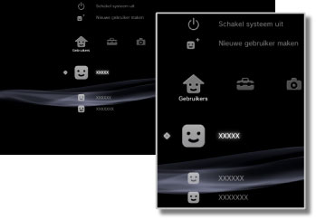

Gebruikers > Categorie Gebruikers
Categorie Gebruikers
Gebruikers aanmaken of het PS3™-systeem uitschakelen. Als u meerdere gebruikers aanmaakt, worden data zoals opgeslagen data voor PlayStation®3-software, verstuurd en ontvangen berichten onder  (Vrienden) en bladwijzers onder
(Vrienden) en bladwijzers onder  (Internetbrowser) apart bewaard voor elke gebruiker. De volgende pictogrammen worden getoond onder
(Internetbrowser) apart bewaard voor elke gebruiker. De volgende pictogrammen worden getoond onder  (Gebruikers).
(Gebruikers).

 |
Schakel systeem uit | Schakel het PS3™-systeem uit. |
|---|---|---|
 |
Nieuwe gebruiker maken | Een nieuwe gebruiker maken. |
 |
(gebruikersnaam) | Aanmelden op het PS3™-systeem. |
Opmerking
De volgende soorten data opgeslagen op de vaste schijf worden weergegeven, ongeacht de gebruiker die inlogt. Als de data wordt verwijderd, zullen andere gebruikers die ook niet meer kunnen gebruiken. Zorg ervoor dat u niet per ongeluk belangrijke gegevens wist.
- Opgeslagen data voor PlayStation®2/PlayStation®-software
- Games weergegeven onder
 (Game)
(Game) - Videobestanden weergegeven onder
 (Video)
(Video) - Muziekbestanden weergegeven onder
 (Muziek)
(Muziek) - Afbeeldingsbestanden weergegeven onder
 (Foto)
(Foto)
Let op
- Sommige PlayStation®2- of PlayStation®-softwaretitels kunnen anders werken op het PS3™-systeem dan op PlayStation®2- of PlayStation®-systemen of werken soms niet goed op het PS3™-systeem.
- PlayStation®2-software kan bovendien niet afgespeeld worden op sommige PS3™-systemen. Voor meer informatie kunt u [Types afspeelbare discs] raadplegen, de SCE-website voor uw regio bezoeken of de documentatie bekijken die met uw PS3™-systeem meegeleverd werd.